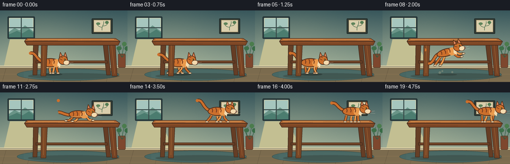
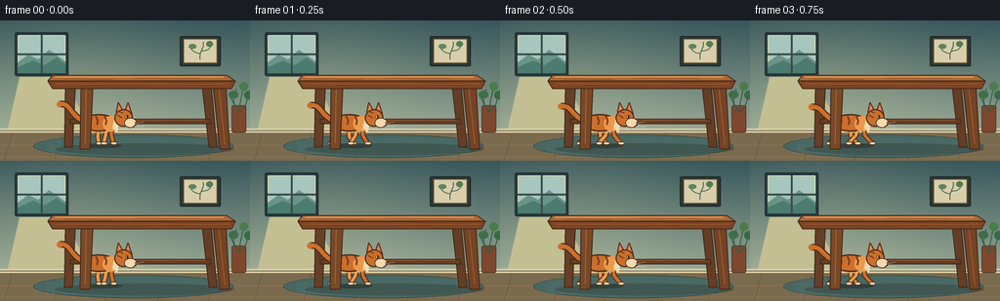

CODING AGENTS AS PIXEL WORLD MODELS
traex/GPT-5.6-Sol · dynamic_spatial_relationship_0014
点击播放 · 原生 RGB 像素
逐轮保存的候选
回放视频、检查图与代码变化。
每份候选均可单独播放。实际图片检查记录在下方工具轨迹中。
候选 01播放与检查图
点击播放 · 原生 RGB 像素


展开代码变化
--- 上一保存版本
+++ 本次保存版本
@@ -0,0 +1,255 @@
+from pathlib import Path
+import math
+import numpy as np
+from PIL import Image, ImageDraw, ImageFilter
+import artifact_io
+
+W, H, N = 256, 144, 20
+SS = 4
+ROOT = Path(__file__).resolve().parent
+rng = np.random.default_rng(1401)
+
+def sc(v): return int(round(v * SS))
+def pts(seq): return [(sc(x), sc(y)) for x, y in seq]
+
+def bezier(p0, p1, p2, p3, n=25):
+ out=[]
+ for t in np.linspace(0,1,n):
+ u=1-t
+ out.append((u**3*p0[0]+3*u*u*t*p1[0]+3*u*t*t*p2[0]+t**3*p3[0],
+ u**3*p0[1]+3*u*u*t*p1[1]+3*u*t*t*p2[1]+t**3*p3[1]))
+ return out
+
+def line(draw, xy, fill, width, joint='curve'):
+ draw.line(pts(xy), fill=fill, width=sc(width), joint=joint)
+
+def ellipse(draw, box, fill, outline=None, width=1):
+ draw.ellipse(tuple(sc(x) for x in box), fill=fill, outline=outline, width=sc(width) if outline else 1)
+
+def polygon(draw, xy, fill, outline=None):
+ draw.polygon(pts(xy), fill=fill)
+ if outline: line(draw, list(xy)+[xy[0]], outline, 1)
+
+def rounded(draw, box, radius, fill, outline=None, width=1):
+ draw.rounded_rectangle(tuple(sc(x) for x in box), radius=sc(radius), fill=fill, outline=outline,
+ width=sc(width) if outline else 1)
+
+# One stable, softly textured interior background.
+yy, xx = np.mgrid[0:H*SS, 0:W*SS]
+y01 = yy/(H*SS-1)
+top=np.array([55,86,91.],float); bot=np.array([174,187,161.],float)
+bg = top[None,None,:]*(1-y01[:,:,None]) + bot[None,None,:]*y01[:,:,None]
+# warm window light across the center
+light=np.exp(-(((xx/SS-78)/100)**2+((yy/SS-58)/92)**2))*22
+bg += light[:,:,None]*np.array([1.0,.78,.42])[None,None,:]
+noise = rng.normal(0, 1.35, (H*SS,W*SS,1))
+bg=np.clip(bg+noise,0,255).astype(np.uint8)
+BASE=Image.fromarray(bg,'RGB')
+
+def draw_room(im):
+ d=ImageDraw.Draw(im)
+ # window recess, casement, and distant sky
+ rounded(d,(15,12,70,57),2,(39,57,61),(34,49,50),1.2)
+ rounded(d,(18,15,67,54),1,(166,198,190),(221,217,177),1)
+ # hazy landscape in the window
+ polygon(d,[(18,43),(29,35),(39,40),(50,30),(67,42),(67,54),(18,54)],(105,148,135))
+ polygon(d,[(18,48),(34,41),(45,46),(58,38),(67,45),(67,54),(18,54)],(75,124,111))
+ line(d,[(42.5,15),(42.5,54)],(58,77,75),2)
+ line(d,[(18,34.5),(67,34.5)],(58,77,75),2)
+ # glow on wall below window
+ polygon(d,[(20,58),(65,58),(94,115),(7,115)],(195,191,146))
+ # translucent glaze over light polygon
+ # framed botanical print
+ rounded(d,(184,16,226,47),1.5,(47,57,52),(32,42,39),1.3)
+ rounded(d,(188,19,222,43.5),.5,(217,206,172),(153,127,83),.7)
+ line(d,bezier((205,40),(203,33),(210,27),(208,22)),(71,106,77),1.1)
+ line(d,bezier((205,34),(197,33),(196,29),(194,27)),(71,106,77),1)
+ line(d,bezier((206,31),(215,31),(215,27),(217,25)),(71,106,77),1)
+ ellipse(d,(193,24,201,29),(95,132,91))
+ ellipse(d,(211,21,218,27),(84,124,82))
+ # baseboard and floor
+ polygon(d,[(0,111),(256,111),(256,144),(0,144)],(123,107,78))
+ polygon(d,[(0,111),(256,111),(256,115),(0,115)],(225,210,169))
+ line(d,[(0,113),(256,113)],(75,83,70),.7)
+ # floor boards
+ for x in [12,63,115,169,221]: line(d,[(x,116),(x-8,144)],(94,80,60),.45)
+ for y in [128,140]: line(d,[(0,y),(256,y)],(145,122,85),.4)
+ # oval woven rug
+ ellipse(d,(34,117,239,141),(72,103,99),(51,75,73),.8)
+ for k in range(8):
+ y=121+k*2.1
+ line(d,[(48,y),(226,y+0.5)],(88+3*k,120+2*k,112+2*k),.55)
+ # plant at right, behind table
+ rounded(d,(237,87,252,115),2,(126,71,46),(78,55,40),.8)
+ for end,ctrl in [((242,70),(238,84)),((250,66),(246,83)),((255,75),(251,89)),((235,76),(241,89))]:
+ line(d,bezier((245,94),ctrl,ctrl,end),(48,92,66),1.1)
+ ellipse(d,(234,72,244,80),(62,111,73))
+ ellipse(d,(245,63,254,72),(75,124,77))
+ ellipse(d,(250,72,259,81),(56,107,69))
+
+def draw_table_back(im):
+ d=ImageDraw.Draw(im,'RGBA')
+ # broad floor shadow
+ ellipse(d,(56,126,240,138),(39,42,34,75))
+ # far legs, slightly cool and dim
+ polygon(d,[(67,67),(77,67),(74,130),(66,130)],(102,63,38,255),(65,43,29,255))
+ polygon(d,[(207,67),(216,67),(222,130),(214,130)],(101,61,37,255),(65,43,29,255))
+ # lower support bar behind cat
+ polygon(d,[(72,101),(215,101),(216,106),(72,106)],(103,62,37,255),(66,42,28,255))
+ line(d,[(77,102),(210,102)],(174,112,61,180),.7)
+
+def draw_table_front(im, top=True):
+ d=ImageDraw.Draw(im,'RGBA')
+ # near legs taper slightly
+ polygon(d,[(83,65),(95,65),(92,132),(82,132)],(121,72,39,255),(70,43,28,255))
+ polygon(d,[(218,65),(231,65),(235,132),(225,132)],(117,67,37,255),(67,42,28,255))
+ # highlights and wood grain on legs
+ line(d,[(88,70),(87,126)],(178,113,59,180),1)
+ line(d,[(224,70),(230,127)],(172,106,56,170),1)
+ if top:
+ # top surface and thick front apron
+ polygon(d,[(54,56),(232,56),(241,62),(49,62)],(174,104,54,255),(72,46,31,255))
+ polygon(d,[(49,62),(241,62),(237,70),(54,70)],(125,70,37,255),(69,43,28,255))
+ line(d,[(56,58),(229,58)],(224,153,82,255),1.15)
+ line(d,[(57,65),(235,65)],(161,93,48,210),.7)
+ # subtle horizontal grain
+ for a,b,y in [(66,116,60),(137,205,59),(82,151,67),(169,222,64)]:
+ line(d,bezier((a,y),(a+14,y-1),(b-11,y+1),(b,y)),(84,50,32,130),.42)
+
+def cat_sprite(pose, phase, tilt=0):
+ # Draw at final supersampling resolution, then rotate as one articulated silhouette.
+ sw, sh = 94, 68
+ im=Image.new('RGBA',(sw*SS,sh*SS),(0,0,0,0)); d=ImageDraw.Draw(im,'RGBA')
+ outline=(78,45,27,255); orange=(204,111,44,255); light=(235,153,75,255)
+ dark=(121,62,32,255); cream=(244,218,174,255)
+ # pose geometry in local pixels
+ if pose=='crouch':
+ body=(24,29,62,45); head=(58,24,77,41); legtop=40; footy=52
+ elif pose=='jump':
+ body=(23,23,62,39); head=(59,18,78,35); legtop=35; footy=49
+ else:
+ body=(24,22,62,40); head=(59,17,78,35); legtop=36; footy=52
+ # animated tail behind the body
+ swing=math.sin(phase*1.55)
+ if pose=='jump': tailcurve=bezier((28,30),(16,31),(12,47),(2,43))
+ elif pose=='crouch': tailcurve=bezier((28,38),(16,39),(10,32),(3,35+swing*2))
+ else: tailcurve=bezier((28,29),(14,25),(15,10+swing*4),(3,12+swing*3))
+ line(d,tailcurve,outline,7)
+ line(d,tailcurve,orange,4.5)
+ ellipse(d,(0,9+swing*3,6,15+swing*3),orange)
+ # legs: dark outline then colored inner strokes, phase gives a readable run cycle
+ if pose=='jump':
+ legs=[([(32,35),(21,44),(14,50)],orange), ([(39,36),(30,48),(24,53)],light),
+ ([(57,32),(68,41),(75,42)],light), ([(54,34),(63,45),(70,47)],orange)]
+ elif pose=='crouch':
+ legs=[([(34,41),(25,49),(18,50)],orange), ([(44,42),(38,50),(31,51)],light),
+ ([(57,39),(65,48),(72,49)],light)]
+ else:
+ stride=math.sin(phase*2.25)*7
+ legs=[([(33,36),(31-stride*.35,44),(28-stride,52)],orange),
+ ([(43,37),(42+stride*.25,45),(43+stride,52)],light),
+ ([(56,35),(56+stride*.25,44),(58+stride,52)],orange),
+ ([(51,35),(50-stride*.2,44),(48-stride,52)],light)]
+ for path,col in legs:
+ line(d,path,outline,5.2)
+ line(d,path,col,3.2)
+ x,y=path[-1]
+ ellipse(d,(x-3,y-1.7,x+4,y+1.7),cream,outline,.65)
+ # torso
+ ellipse(d,body,orange,outline,1.45)
+ # warm shoulder and belly modeling
+ ellipse(d,(47,24 if pose!='crouch' else 31,63,40 if pose!='crouch' else 45),light)
+ line(d,bezier((28,37 if pose!='crouch' else 42),(39,42),(50,42),(59,37)),(242,181,104,170),1.0)
+ # tabby stripes following the body
+ for x in [32,40,49]:
+ y0=23 if pose!='crouch' else 30
+ line(d,[(x,y0+1),(x+2,y0+6),(x+1,y0+10)],dark,1.7)
+ # neck/chest bib
+ polygon(d,[(59,27),(64,31),(62,41),(57,36)],cream)
+ # ears behind the head
+ polygon(d,[(61,20 if pose!='crouch' else 27),(63,10 if pose!='crouch' else 17),(68,19 if pose!='crouch' else 26)],orange,outline)
+ polygon(d,[(70,18 if pose!='crouch' else 25),(73,10 if pose!='crouch' else 17),(77,22 if pose!='crouch' else 29)],orange,outline)
+ # pink inner ears
+ polygon(d,[(63,18 if pose!='crouch' else 25),(64,13 if pose!='crouch' else 20),(66,19 if pose!='crouch' else 26)],(224,139,116,255))
+ polygon(d,[(72,18 if pose!='crouch' else 25),(73,13 if pose!='crouch' else 20),(75,21 if pose!='crouch' else 28)],(224,139,116,255))
+ # head and muzzle profile
+ ellipse(d,head,orange,outline,1.35)
+ ellipse(d,(69,26 if pose!='crouch' else 33,82,36 if pose!='crouch' else 43),cream,outline,.7)
+ # cheek stripe
+ line(d,[(62,23 if pose!='crouch' else 30),(67,26 if pose!='crouch' else 33)],dark,1.25)
+ line(d,[(63,19 if pose!='crouch' else 26),(68,21 if pose!='crouch' else 28)],dark,1.25)
+ # eye, nose, smile
+ ey=23 if pose!='crouch' else 30
+ ellipse(d,(70,ey,73.5,ey+3.6),(244,208,76,255),outline,.55)
+ ellipse(d,(71.5,ey+.6,72.7,ey+3),(22,27,19,255))
+ polygon(d,[(80,30 if pose!='crouch' else 37),(84,31.5 if pose!='crouch' else 38.5),(80.5,33 if pose!='crouch' else 40)],(101,55,49,255))
+ line(d,[(80.5,33 if pose!='crouch' else 40),(78,35 if pose!='crouch' else 42)],outline,.65)
+ # whiskers
+ wy=32 if pose!='crouch' else 39
+ line(d,[(77,wy),(89,wy-2)],(245,231,201,230),.55)
+ line(d,[(77,wy+2),(90,wy+3)],(245,231,201,220),.55)
+ # rotate around sprite center; BICUBIC keeps high quality before downsample
+ if abs(tilt)>0.01:
+ im=im.rotate(tilt,resample=Image.Resampling.BICUBIC,expand=False,center=(45*SS,31*SS))
+ return im
+
+def motion_for(i):
+ # (cat center x, paw baseline y, pose, body angle, cycle phase)
+ if i <= 3:
+ return 103 + .6*i, 126, 'walk', 0, i*.25
+ if i == 4: return 106,126,'walk',0,1.0
+ if i == 5: return 113,126,'walk',0,2.0
+ if i == 6: return 120,126,'walk',0,3.2
+ if i == 7: return 123,126,'crouch',0,4.0
+ if i == 8: return 130,105,'jump',15,4.8
+ if i == 9: return 141,78,'jump',11,5.5
+ if i == 10:return 153,59,'jump',3,6.1
+ if i == 11:return 159,59,'crouch',0,6.8
+ if i <= 18:
+ return 161+(i-11)*7.0,59,'walk',0,(i-11)*1.1
+ return 212,59,'walk',0,8.0
+
+def render_frame(i):
+ im=BASE.copy()
+ draw_room(im)
+ draw_table_back(im)
+ x, baseline, pose, tilt, phase = motion_for(i)
+ d=ImageDraw.Draw(im,'RGBA')
+ # Dynamic contact shadow conveys the cat's height and landing.
+ if baseline > 112:
+ spread=22 if pose!='crouch' else 25
+ ellipse(d,(x-spread,126,x+spread,131),(29,34,29,105))
+ elif baseline < 66:
+ ellipse(d,(x-20,59,x+22,63),(45,30,20,95))
+ else:
+ # floor shadow stays below while airborne and becomes smaller/fainter
+ altitude=126-baseline
+ ellipse(d,(x-18-altitude*.08,127,x+18+altitude*.08,131),(28,32,28,max(22,80-int(altitude*.65))))
+ # tiny dust puffs at takeoff; restrained enough not to confuse the action.
+ if i in (7,8):
+ a=110 if i==7 else 65
+ for ox,oy,r in [(-15,-1,2.5),(-10,-4,1.7),(10,-2,2.0)]:
+ ellipse(d,(x+ox-r,126+oy-r,x+ox+r,126+oy+r),(216,198,157,a))
+ cat=cat_sprite(pose,phase,tilt)
+ paste_x=sc(x-45); paste_y=sc((baseline-21)-31)
+ # local sprite center (45,31) goes to (x, baseline-21)
+ if i <= 7:
+ im.alpha_composite(cat,(paste_x,paste_y)) if im.mode=='RGBA' else im.paste(cat,(paste_x,paste_y),cat)
+ draw_table_front(im,top=True)
+ else:
+ draw_table_front(im,top=True)
+ im.paste(cat,(paste_x,paste_y),cat)
+ # landing impact accents on table, visible for one frame
+ if i==11:
+ d=ImageDraw.Draw(im,'RGBA')
+ line(d,[(140,55),(136,51)],(236,204,140,150),.7)
+ line(d,[(180,56),(184,52)],(236,204,140,150),.7)
+ return np.asarray(im.resize((W,H),Image.Resampling.LANCZOS).convert('RGB'),dtype=np.uint8)
+
+def main():
+ frames=np.stack([render_frame(i) for i in range(N)],axis=0)
+ assert frames.shape==(20,144,256,3) and frames.dtype==np.uint8
+ artifact_io.save(frames,ROOT)
+ print('saved',frames.shape,frames.dtype,'range',int(frames.min()),int(frames.max()))
+
+if __name__=='__main__': main()
可观测工具轨迹
实际执行的命令与返回图片。
命令 1exit 0
/bin/bash -lc "cat prompt.txt && printf '\\n--- GENERATION_RULES ---\\n' && cat GENERATION_RULES.md"
命令 2exit 0
/bin/bash -lc "cat task_spec.json && printf '\\n--- FILES ---\\n' && find . -maxdepth 2 -type f -printf '%p\\n' | sort"
命令 3exit 0
/bin/bash -lc "command -v ffmpeg; command -v python3; python3 - <<'PY' mods=['PIL','numpy','cv2','imageio'] for m in mods: try: x=__import__(m); print(m, getattr(x,'__version__','ok')) except Exception as e: print(m,'MISSING',e) PY"
命令 4exit 0
/bin/bash -lc 'cat artifact_io.py'
命令 5exit 0
/bin/bash -lc "cat > generate.py <<'PY'
from pathlib import Path
import math
import numpy as np
from PIL import Image, ImageDraw, ImageFilter
import artifact_io
W, H, N = 256, 144, 20
SS = 4
ROOT = Path(__file__).resolve().parent
rng = np.random.default_rng(1401)
def sc(v): return int(round(v * SS))
def pts(seq): return [(sc(x), sc(y)) for x, y in seq]
def bezier(p0, p1, p2, p3, n=25):
out=[]
for t in np.linspace(0,1,n):
u=1-t
out.append((u**3*p0[0]+3*u*u*t*p1[0]+3*u*t*t*p2[0]+t**3*p3[0],
u**3*p0[1]+3*u*u*t*p1[1]+3*u*t*t*p2[1]+t**3*p3[1]))
return out
def line(draw, xy, fill, width, joint='curve'):
draw.line(pts(xy), fill=fill, width=sc(width), joint=joint)
def ellipse(draw, box, fill, outline=None, width=1):
draw.ellipse(tuple(sc(x) for x in box), fill=fill, outline=outline, width=sc(width) if outline else 1)
def polygon(draw, xy, fill, outline=None):
draw.polygon(pts(xy), fill=fill)
if outline: line(draw, list(xy)+[xy[0]], outline, 1)
def rounded(draw, box, radius, fill, outline=None, width=1):
draw.rounded_rectangle(tuple(sc(x) for x in box), radius=sc(radius), fill=fill, outline=outline,
width=sc(width) if outline else 1)
# One stable, softly textured interior background.
yy, xx = np.mgrid[0:H*SS, 0:W*SS]
y01 = yy/(H*SS-1)
top=np.array([55,86,91.],float); bot=np.array([174,187,161.],float)
bg = top[None,None,:]*(1-y01[:,:,None]) + bot[None,None,:]*y01[:,:,None]
# warm window light across the center
light=np.exp(-(((xx/SS-78)/100)**2+((yy/SS-58)/92)**2))*22
bg += light[:,:,None]*np.array([1.0,.78,.42])[None,None,:]
noise = rng.normal(0, 1.35, (H*SS,W*SS,1))
bg=np.clip(bg+noise,0,255).astype(np.uint8)
BASE=Image.fromarray(bg,'RGB')
def draw_room(im):
d=ImageDraw.Draw(im)
# window recess, casement, and distant sky
rounded(d,(15,12,70,57),2,(39,57,61),(34,49,50),1.2)
rounded(d,(18,15,67,54),1,(166,198,190),(221,217,177),1)
# hazy landscape in the window
polygon(d,[(18,43),(29,35),(39,40),(50,30),(67,42),(67,54),(18,54)],(105,148,135))
polygon(d,[(18,48),(34,41),(45,46),(58,38),(67,45),(67,54),(18,54)],(75,124,111))
line(d,[(42.5,15),(42.5,54)],(58,77,75),2)
line(d,[(18,34.5),(67,34.5)],(58,77,75),2)
# glow on wall below window
polygon(d,[(20,58),(65,58),(94,115),(7,115)],(195,191,146))
# translucent glaze over light polygon
# framed botanical print
rounded(d,(184,16,226,47),1.5,(47,57,52),(32,42,39),1.3)
rounded(d,(188,19,222,43.5),.5,(217,206,172),(153,127,83),.7)
line(d,bezier((205,40),(203,33),(210,27),(208,22)),(71,106,77),1.1)
line(d,bezier((205,34),(197,33),(196,29),(194,27)),(71,106,77),1)
line(d,bezier((206,31),(215,31),(215,27),(217,25)),(71,106,77),1)
ellipse(d,(193,24,201,29),(95,132,91))
ellipse(d,(211,21,218,27),(84,124,82))
# baseboard and floor
polygon(d,[(0,111),(256,111),(256,144),(0,144)],(123,107,78))
polygon(d,[(0,111),(256,111),(256,115),(0,115)],(225,210,169))
line(d,[(0,113),(256,113)],(75,83,70),.7)
# floor boards
for x in [12,63,115,169,221]: line(d,[(x,116),(x-8,144)],(94,80,60),.45)
for y in [128,140]: line(d,[(0,y),(256,y)],(145,122,85),.4)
# oval woven rug
ellipse(d,(34,117,239,141),(72,103,99),(51,75,73),.8)
for k in range(8):
y=121+k*2.1
line(d,[(48,y),(226,y+0.5)],(88+3*k,120+2*k,112+2*k),.55)
# plant at right, behind table
rounded(d,(237,87,252,115),2,(126,71,46),(78,55,40),.8)
for end,ctrl in [((242,70),(238,84)),((250,66),(246,83)),((255,75),(251,89)),((235,76),(241,89))]:
line(d,bezier((245,94),ctrl,ctrl,end),(48,92,66),1.1)
ellipse(d,(234,72,244,80),(62,111,73))
ellipse(d,(245,63,254,72),(75,124,77))
ellipse(d,(250,72,259,81),(56,107,69))
def draw_table_back(im):
d=ImageDraw.Draw(im,'RGBA')
# broad floor shadow
ellipse(d,(56,126,240,138),(39,42,34,75))
# far legs, slightly cool and dim
polygon(d,[(67,67),(77,67),(74,130),(66,130)],(102,63,38,255),(65,43,29,255))
polygon(d,[(207,67),(216,67),(222,130),(214,130)],(101,61,37,255),(65,43,29,255))
# lower support bar behind cat
polygon(d,[(72,101),(215,101),(216,106),(72,106)],(103,62,37,255),(66,42,28,255))
line(d,[(77,102),(210,102)],(174,112,61,180),.7)
def draw_table_front(im, top=True):
d=ImageDraw.Draw(im,'RGBA')
# near legs taper slightly
polygon(d,[(83,65),(95,65),(92,132),(82,132)],(121,72,39,255),(70,43,28,255))
polygon(d,[(218,65),(231,65),(235,132),(225,132)],(117,67,37,255),(67,42,28,255))
# highlights and wood grain on legs
line(d,[(88,70),(87,126)],(178,113,59,180),1)
line(d,[(224,70),(230,127)],(172,106,56,170),1)
if top:
# top surface and thick front apron
polygon(d,[(54,56),(232,56),(241,62),(49,62)],(174,104,54,255),(72,46,31,255))
polygon(d,[(49,62),(241,62),(237,70),(54,70)],(125,70,37,255),(69,43,28,255))
line(d,[(56,58),(229,58)],(224,153,82,255),1.15)
line(d,[(57,65),(235,65)],(161,93,48,210),.7)
# subtle horizontal grain
for a,b,y in [(66,116,60),(137,205,59),(82,151,67),(169,222,64)]:
line(d,bezier((a,y),(a+14,y-1),(b-11,y+1),(b,y)),(84,50,32,130),.42)
def cat_sprite(pose, phase, tilt=0):
# Draw at final supersampling resolution, then rotate as one articulated silhouette.
sw, sh = 94, 68
im=Image.new('RGBA',(sw*SS,sh*SS),(0,0,0,0)); d=ImageDraw.Draw(im,'RGBA')
outline=(78,45,27,255); orange=(204,111,44,255); light=(235,153,75,255)
dark=(121,62,32,255); cream=(244,218,174,255)
# pose geometry in local pixels
if pose=='crouch':
body=(24,29,62,45); head=(58,24,77,41); legtop=40; footy=52
elif pose=='jump':
body=(23,23,62,39); head=(59,18,78,35); legtop=35; footy=49
else:
body=(24,22,62,40); head=(59,17,78,35); legtop=36; footy=52
# animated tail behind the body
swing=math.sin(phase*1.55)
if pose=='jump': tailcurve=bezier((28,30),(16,31),(12,47),(2,43))
elif pose=='crouch': tailcurve=bezier((28,38),(16,39),(10,32),(3,35+swing*2))
else: tailcurve=bezier((28,29),(14,25),(15,10+swing*4),(3,12+swing*3))
line(d,tailcurve,outline,7)
line(d,tailcurve,orange,4.5)
ellipse(d,(0,9+swing*3,6,15+swing*3),orange)
# legs: dark outline then colored inner strokes, phase gives a readable run cycle
if pose=='jump':
legs=[([(32,35),(21,44),(14,50)],orange), ([(39,36),(30,48),(24,53)],light),
([(57,32),(68,41),(75,42)],light), ([(54,34),(63,45),(70,47)],orange)]
elif pose=='crouch':
legs=[([(34,41),(25,49),(18,50)],orange), ([(44,42),(38,50),(31,51)],light),
([(57,39),(65,48),(72,49)],light)]
else:
stride=math.sin(phase*2.25)*7
legs=[([(33,36),(31-stride*.35,44),(28-stride,52)],orange),
([(43,37),(42+stride*.25,45),(43+stride,52)],light),
([(56,35),(56+stride*.25,44),(58+stride,52)],orange),
([(51,35),(50-stride*.2,44),(48-stride,52)],light)]
for path,col in legs:
line(d,path,outline,5.2)
line(d,path,col,3.2)
x,y=path[-1]
ellipse(d,(x-3,y-1.7,x+4,y+1.7),cream,outline,.65)
# torso
ellipse(d,body,orange,outline,1.45)
# warm shoulder and belly modeling
ellipse(d,(47,24 if pose"'!='"'crouch' else 31,63,40 if pose"'!='"'crouch' else 45),light)
line(d,bezier((28,37 if pose"'!='"'crouch' else 42),(39,42),(50,42),(59,37)),(242,181,104,170),1.0)
# tabby stripes following the body
for x in [32,40,49]:
y0=23 if pose"'!='"'crouch' else 30
line(d,[(x,y0+1),(x+2,y0+6),(x+1,y0+10)],dark,1.7)
# neck/chest bib
polygon(d,[(59,27),(64,31),(62,41),(57,36)],cream)
# ears behind the head
polygon(d,[(61,20 if pose"'!='"'crouch' else 27),(63,10 if pose"'!='"'crouch' else 17),(68,19 if pose"'!='"'crouch' else 26)],orange,outline)
polygon(d,[(70,18 if pose"'!='"'crouch' else 25),(73,10 if pose"'!='"'crouch' else 17),(77,22 if pose"'!='"'crouch' else 29)],orange,outline)
# pink inner ears
polygon(d,[(63,18 if pose"'!='"'crouch' else 25),(64,13 if pose"'!='"'crouch' else 20),(66,19 if pose"'!='"'crouch' else 26)],(224,139,116,255))
polygon(d,[(72,18 if pose"'!='"'crouch' else 25),(73,13 if pose"'!='"'crouch' else 20),(75,21 if pose"'!='"'crouch' else 28)],(224,139,116,255))
# head and muzzle profile
ellipse(d,head,orange,outline,1.35)
ellipse(d,(69,26 if pose"'!='"'crouch' else 33,82,36 if pose"'!='"'crouch' else 43),cream,outline,.7)
# cheek stripe
line(d,[(62,23 if pose"'!='"'crouch' else 30),(67,26 if pose"'!='"'crouch' else 33)],dark,1.25)
line(d,[(63,19 if pose"'!='"'crouch' else 26),(68,21 if pose"'!='"'crouch' else 28)],dark,1.25)
# eye, nose, smile
ey=23 if pose"'!='"'crouch' else 30
ellipse(d,(70,ey,73.5,ey+3.6),(244,208,76,255),outline,.55)
ellipse(d,(71.5,ey+.6,72.7,ey+3),(22,27,19,255))
polygon(d,[(80,30 if pose"'!='"'crouch' else 37),(84,31.5 if pose"'!='"'crouch' else 38.5),(80.5,33 if pose"'!='"'crouch' else 40)],(101,55,49,255))
line(d,[(80.5,33 if pose"'!='"'crouch' else 40),(78,35 if pose"'!='"'crouch' else 42)],outline,.65)
# whiskers
wy=32 if pose"'!='"'crouch' else 39
line(d,[(77,wy),(89,wy-2)],(245,231,201,230),.55)
line(d,[(77,wy+2),(90,wy+3)],(245,231,201,220),.55)
# rotate around sprite center; BICUBIC keeps high quality before downsample
if abs(tilt)>0.01:
im=im.rotate(tilt,resample=Image.Resampling.BICUBIC,expand=False,center=(45*SS,31*SS))
return im
def motion_for(i):
# (cat center x, paw baseline y, pose, body angle, cycle phase)
if i <= 3:
return 103 + .6*i, 126, 'walk', 0, i*.25
if i == 4: return 106,126,'walk',0,1.0
if i == 5: return 113,126,'walk',0,2.0
if i == 6: return 120,126,'walk',0,3.2
if i == 7: return 123,126,'crouch',0,4.0
if i == 8: return 130,105,'jump',15,4.8
if i == 9: return 141,78,'jump',11,5.5
if i == 10:return 153,59,'jump',3,6.1
if i == 11:return 159,59,'crouch',0,6.8
if i <= 18:
return 161+(i-11)*7.0,59,'walk',0,(i-11)*1.1
return 212,59,'walk',0,8.0
def render_frame(i):
im=BASE.copy()
draw_room(im)
draw_table_back(im)
x, baseline, pose, tilt, phase = motion_for(i)
d=ImageDraw.Draw(im,'RGBA')
# Dynamic contact shadow conveys the cat's height and landing.
if baseline > 112:
spread=22 if pose"'!='"'crouch' else 25
ellipse(d,(x-spread,126,x+spread,131),(29,34,29,105))
elif baseline < 66:
ellipse(d,(x-20,59,x+22,63),(45,30,20,95))
else:
# floor shadow stays below while airborne and becomes smaller/fainter
altitude=126-baseline
ellipse(d,(x-18-altitude*.08,127,x+18+altitude*.08,131),(28,32,28,max(22,80-int(altitude*.65))))
# tiny dust puffs at takeoff; restrained enough not to confuse the action.
if i in (7,8):
a=110 if i==7 else 65
for ox,oy,r in [(-15,-1,2.5),(-10,-4,1.7),(10,-2,2.0)]:
ellipse(d,(x+ox-r,126+oy-r,x+ox+r,126+oy+r),(216,198,157,a))
cat=cat_sprite(pose,phase,tilt)
paste_x=sc(x-45); paste_y=sc((baseline-21)-31)
# local sprite center (45,31) goes to (x, baseline-21)
if i <= 7:
im.alpha_composite(cat,(paste_x,paste_y)) if im.mode=='RGBA' else im.paste(cat,(paste_x,paste_y),cat)
draw_table_front(im,top=True)
else:
draw_table_front(im,top=True)
im.paste(cat,(paste_x,paste_y),cat)
# landing impact accents on table, visible for one frame
if i==11:
d=ImageDraw.Draw(im,'RGBA')
line(d,[(140,55),(136,51)],(236,204,140,150),.7)
line(d,[(180,56),(184,52)],(236,204,140,150),.7)
return np.asarray(im.resize((W,H),Image.Resampling.LANCZOS).convert('RGB'),dtype=np.uint8)
def main():
frames=np.stack([render_frame(i) for i in range(N)],axis=0)
assert frames.shape==(20,144,256,3) and frames.dtype==np.uint8
artifact_io.save(frames,ROOT)
print('saved',frames.shape,frames.dtype,'range',int(frames.min()),int(frames.max()))
if __name__=='__main__': main()
PY
python3 generate.py"命令 6exit 0
/bin/bash -lc "python3 -m py_compile generate.py && python3 - <<'PY'
import numpy as np
from PIL import Image
z=np.load('pixels.npz')['pixels']
print('packed shape/dtype:',z.shape,z.dtype)
files=sorted(__import__('pathlib').Path('frames').glob('*.png'))
print('frame files:',len(files),files[0].name,files[-1].name)
ims=np.stack([np.asarray(Image.open(p).convert('RGB')) for p in files])
print('RGB:',ims.shape,ims.dtype,ims.min(),ims.max())
print('mean abs frame deltas:',np.round(np.abs(np.diff(ims.astype(np.int16),axis=0)).mean((1,2,3)),2).tolist())
print('unique sha256 frames:')
import hashlib
for i,x in enumerate(ims): print(f'{i:02d}',hashlib.sha256(x.tobytes()).hexdigest()[:10])
PY"命令 7exit 0
/bin/bash -lc "ls -lh pixels.npz index.html inspection.png transition_check.png frames/00.png frames/19.png generate.py && python3 - <<'PY'
from PIL import Image
import numpy as np
# report orange-cat color occupancy centroids as an independent motion sanity check
for i in range(20):
a=np.array(Image.open(f'frames/{i:02}.png'))
m=(a[:,:,0]>150)&(a[:,:,0]>a[:,:,1]*1.35)&(a[:,:,1]>65)&(a[:,:,2]<105)
y,x=np.where(m)
# Limit to probable cat pixels; table adds static orange, so use changing rough scene bands too.
print(i, int(m.sum()), (round(float(x.mean()),1),round(float(y.mean()),1)))
PY"保存候选 1 份；完成命令 7 次；可验证图片返回 0 张。原始 API 响应与完整日志保留在本地。